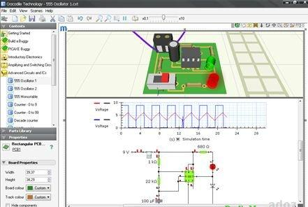
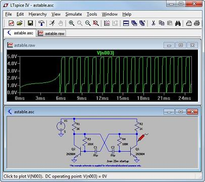
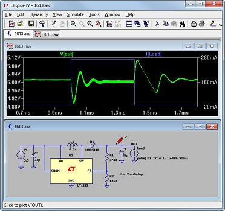
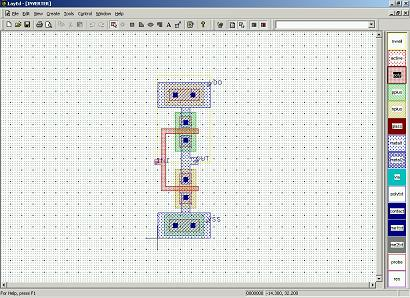

|
Выложена программа для схемотехников  Программа для симуляции радиотехнических цепей, с наглядной скачать Crocodile Technology 3D DEPOSITFILES Реклама   Программа для создания электронных схем.  программа для трассировки печатных плат Теги: Здесь представлен софт для проектирования моделирования схематических решений. С ней не трудно разобраться. Радиотехнические программы полезны для радиолюбителей. И это не удивительно. Нужна эта программулина для симуляциия моделирование радиотехнических конструкций. В этих книгах собраны наиболее интересные задумки полезных устройств, дается возможность каждому радиолюбителю выбрать то, что ему необходимо из великого множества решений и конструкций на датчике холла a3144, проверенных и испытанных на практике. Предлагаемое решение В конце каждого раздела даны упражнения. В них приводятся схематика и результаты, полученные во время симулирования, когда запустить схему. Студентам предлагается решить эти задачи, чтобы сравнить полученные ответы с приведенными в книге. Цель этих упражнений состоит не в изучении электросхем, а в том, чтобы можно было попрактиковаться в работе с программой. Это также софт для построения моделирования схемы. Интуитивно-понятный пользовательский интерфейс
Проверка включает следующие этапы: автоматизированная проверка новых компонентов в библиотеках, выявляющая возможные признаки ошибок и минимизирующая "человеческий фактор"; проверка допустимости соединений схем (ERC); проверка зазоров, размерностей и различных признаков ошибок на плате (DRC); проверка целостности соединений на плате; сравнение с изначальным проектом. Метод исправления ошибок Ошибки выводятся в виде списка и отображаются в проекте, возможно их исправление "на лету" с перезапуском проверки.Они упрощают их работу. Здесь можно бесплатно скачать радиотехнические программы. Наша программа для создания электрических схем имеет особую направленность. Радиопрограммы скачать бесплатно прямо с этой странички - просто нажмите на ссылку. Кроме электропараметров приведены данные по корпусам, цоколевке и маркировке. Когда на этот остов добавляются знание и практика, любопытство превращается в любознательность, а радиолюбительство становится прекрасным занятием, способным не только развлечь вас в часы досуга, но обогащающим вас опытом, который поможет вам в работе, какую бы профессию вы себе не выбрали. В любой профессиональной деятельности много схожего в подходах и путях поиска решений. Овладеть этим и означает овладеть профессией. Множество принципиальных электрических устройств программы можно разрабатывать налету с минимумом меню. |
|
|